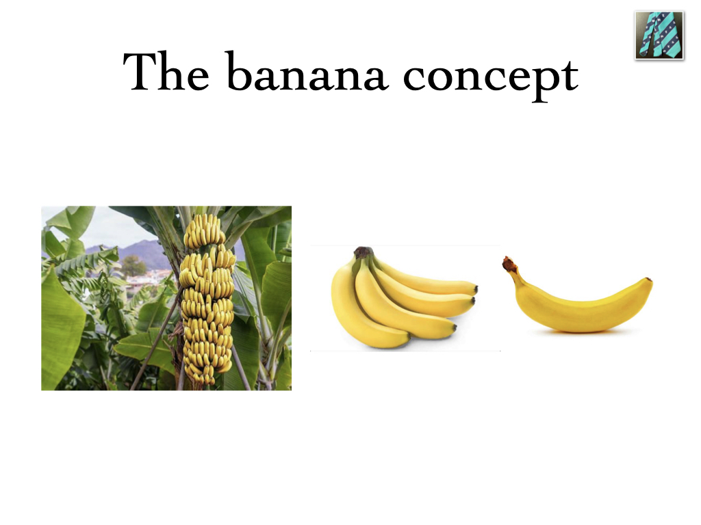

Teaching complex procedural skill
The problem of metal puzzle
Requirements for the solution
You should be aware of the problem
You should be interested in the problem and solution
You should have the skills
Awareness
Role of teacher
make you aware of the problem
kindle interest
transfer the skills
What is Skill?
- Conventionally taken as part of psycho-motor domain
- “Any action which has a measurable impact on outcome”
Different types of skills
Intellectual or Cognitive skill
Psychomotor or Procedural skill
Communication skill
Intellectual skills needed to solve the puzzle
Problem-Solving:
breaking down the puzzle into smaller problems
identifying potential solutions, and
evaluating their effectiveness.
Critical Thinking:
analyzing the puzzle,
identifying patterns, and
making logical deductions to determine the correct sequence of moves.
Perseverance
Attention to Detail
How to teach this?
Key concept is to activate prior knowledge
One minute preceptor (OMP)
SNAPPS
Mini-CEX
One Minute Preceptor
Ask for a Commitment
Probe for Supporting Evidence
Provide Positive Feedback - what was done well
Guidance - Errors / Omissions
Teach General Principle
Conclusion
One Minute Preceptor
SNAPPS model
Summarize the case
Narrow the differential diagnosis
Analyse the differentials
Probe the preceptor about uncertainties
Plan management
Solving the puzzle physically
How to teach this?
Peyton’s Four-Step Approach – Cognitive, Integrative, Autonomous Phases
| Phase | Activity |
|---|---|
| Demonstrate | Trainer demonstrates |
| De construct | Trainer describes the steps and demonstrates |
| Comprehension | Learner describes the steps, trainer demonstrates |
| Performance | Learner describes the steps and demonstrates |
If the puzzle was alive..
SPIKES-A Method for communication
Setting up the interview
Assessing patient’s Perception
Obtain Invitation
Giving Knowledge and Information
Addressing patient’s Emotions with empathic response
Strategy and Summary
Another way of looking at skills
| Technical | Non-technical |
|---|---|
| History taking | Situational awareness |
| Physical examination | Task management |
| Communication (patients) | Communication (team) |
| Procedural skills | Decision making |
| Information management | Prioritization skills |
Few definitions
Competency is a quality characterised by observability and demonstrability
Skill is ability to do something which is measurable
Objective is what we want the student to learn/do
Curriculum
Syllabus
Can be compared to

Take Home Message
- NMC has specified the methods for skill teaching (Skills module)
- We should at least be able to enumerate them and practice some of the methods.
- We should be able to create and execute a lesson plan for skill teaching.
- We are dealing with NOVICE ADULTS
- “Though this be madness, yet there is method in’t?” - Shakespeare
Conclusion
“Down the Rabbit Hole”
“Alice: Would you tell me, please, which way I ought to go from here?
The Cat: That depends a good deal on where you want to get to.
Alice: I don’t much care where.
The Cat: Then it doesn’t much matter which way you go.
Alice: …So long as I get somewhere.
The Cat: Oh, you’re sure to do that, if only you walk long enough.”
Doing the right thing is more valuable than getting things done SOMEHOW

Kishore Puthezhath FRCS (Tr & Orth)(Eng)